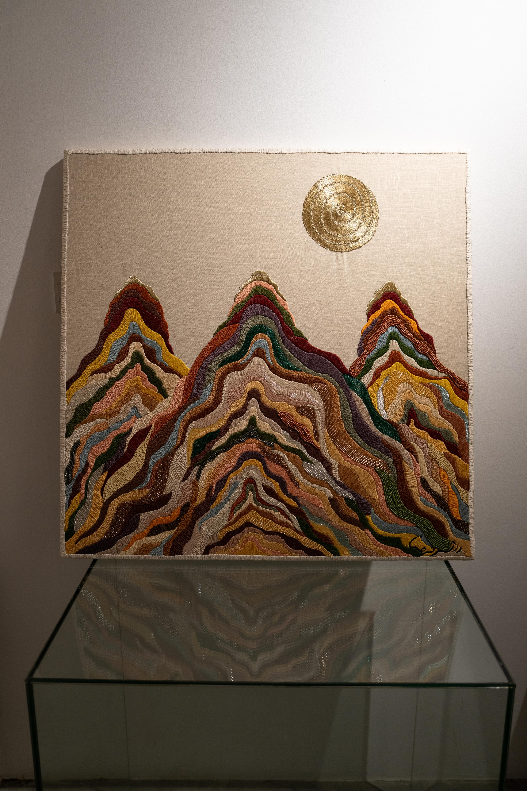
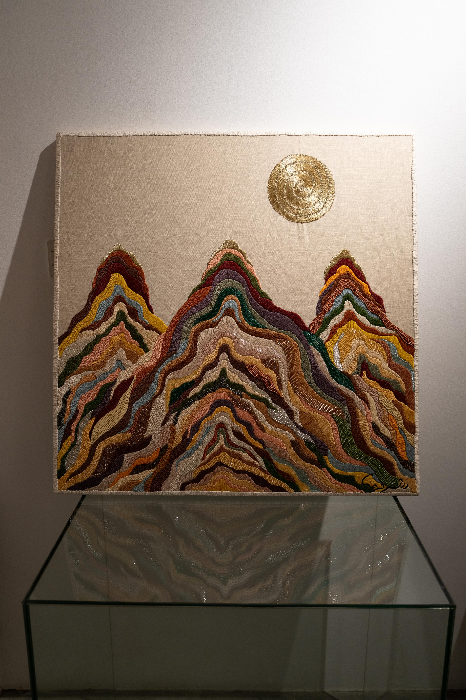
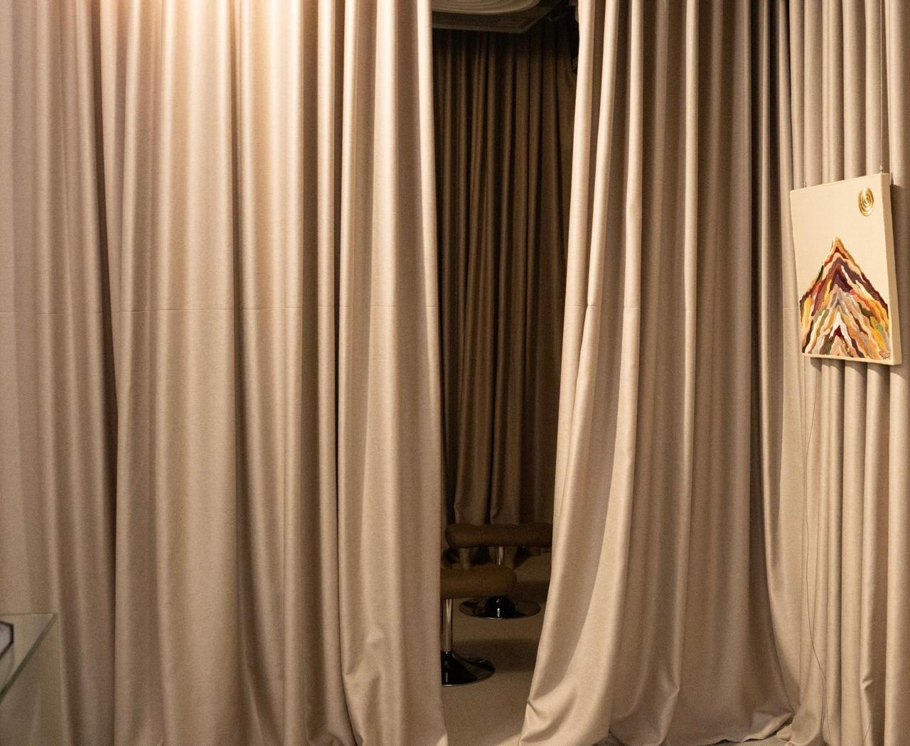
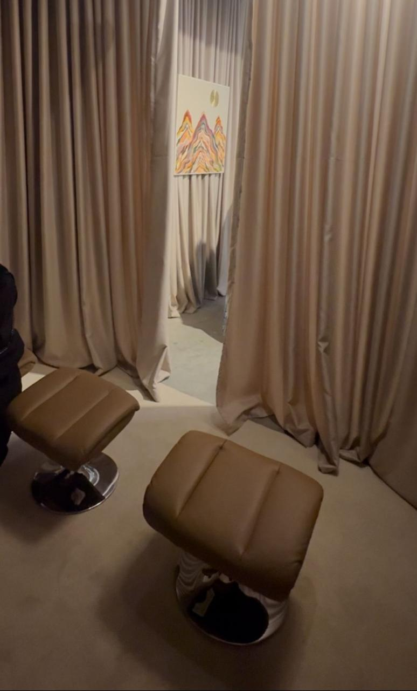
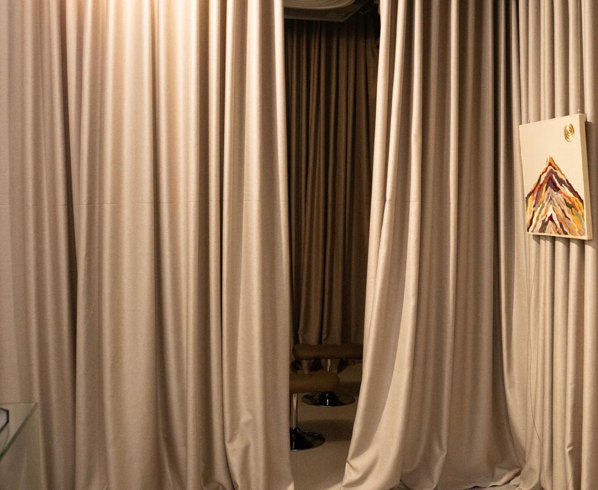
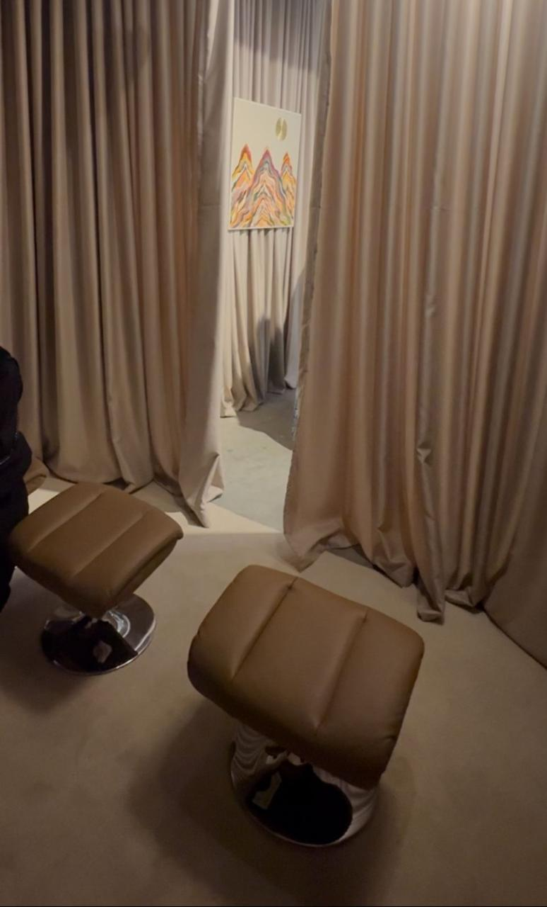

Asma Alshurayhi
Contemporary Artist
About
About Me
Based in Saudi Arabia, Asma Alshurayhi works across textile, material research, cultural symbolism, and immersive sound. She earned her Fine Arts degree from King Saud University and expanded her practice through rigorous engagement with contemporary art programs, masterclasses, and research workshops at institutions including Misk Art Institute including a research-based artist residency program, the American University in Cairo, and Asia Art Archive.
Her practice includes embroidery, painting, collage, and sound-based works that investigate acoustic memory, spatial listening, and the emotional dimensions of place. By combining visual and sonic elements, her work creates layered narratives informed by heritage, sensory experience, and cultural inquiry.
Asma's work has been exhibited within significant institutional contexts, including collaborations with the Ministry of Culture, Ministry of Human Resources, and Ministry of Tourism. Her work has been featured in Hia Magazine highlighting its integration of craft, symbolism, and contemporary research methodologies.
Driven by rigorous research, material exploration, and interdisciplinary dialogue, her practice develops a cohesive body of work grounded in observation, memory, and cultural resonance.
Artist Statement
My practice unfolds across expressive abstraction, textile-based forms, cultural symbolism, and immersive sound, shaped by an evolving inquiry into memory, materiality, and sensory perception.
I began my formal study of art at King Saud University, where the foundations of drawing, color, and visual analysis marked the beginning of a long research trajectory. Over time, this foundation expanded through advanced programs, masterclasses, and contemporary art studies with respected regional and international institutions — experiences that deepened my understanding of material processes, symbolic languages, and the evolving discourse of contemporary practice.
My work is rooted in questions:
How do materials carry memory?
What is the emotional architecture of sound?
How can threads, textures, and rhythms act as forms of cultural storytelling?
And how do we perceive identity through what we see — and what we hear?
These inquiries guide my transition toward interdisciplinary and immersive forms, where embroidery, layered surfaces, and field-recorded sound converge into a unified visual–sonic language. I see my practice as a process of uncovering: tracing emotional, cultural, and sensory layers that live both within the individual and within the wider landscape.
Across mediums, each piece becomes a topography of presence — a space where memory is textured, resonant, and profoundly human.
Projects / Works
The Najdi Triangle


This work is inspired by the triangular motif in Najdi architecture. Through research, I discovered that the triangle is not merely a decorative element, but carries layered meanings and symbolic depth in the built heritage of Najd.
The installation consists of 16 clay-like blocks, each representing a traditional Najdi house with elevated geometric structures. A projector overlays the piece: every ten seconds, a word appears, reflecting one of the symbolic meanings of the triangle in Najdi culture.
All We See is Appearance
 


This work is inspired by the old proverb "We are only responsible for the outward" and the jurisprudential principle "The outward is ours, and God knows the inward."
The series consists of seven textile panels, hand-embroidered with diverse threads, materials, and colors. Each piece carries fine details, with every element carefully crafted and holding a unique symbolism. The mountain, its layers, the sun, and the threads… all intertwine to create a serene and dignified visual presence. The panels are presented in acrylic boxes that preserve them and provide visual depth.
Layers of Riyadh
 





Overview
Layers of Riyadh is a sonic portrait of a city unfolding through a single day across three generations. The work begins with the Fajr Adhan of 1985 and concludes with the Isha Adhan of 2025, tracing a temporal arc shaped by memory, transformation, and lived experience.
Rather than documenting Riyadh, the installation invites the listener to inhabit it from within — through domestic soundscapes, social rituals, and moments of urban change. Sound becomes a medium for remembering rather than observing.
Artist Statement
This work began with a simple question:
How does a city sound when time moves through its people?
I approached Riyadh as an emotional landscape rather than a visual one, allowing sound to carry traces of childhood, generational rhythm, and transformation. The work moves fluidly between decades, unfolding like a shared memory shaped by listening.
Installation Experience
The listening room was designed as a calm, inward space. A circular speaker arrangement guided sound around the body, supported by low, warm lighting and inward-facing seating. Sound moved gently through the room, allowing time to unfold as a continuous presence rather than a fixed sequence.
Embodied Listening & Sensory Design
Listening was approached as an embodied act. Layered curtains formed both the studio and listening room, translating the conceptual foundation of Layers of Riyadh into a physical threshold. Visitors passed through layers before entering a soundscape composed of layered voices and time.
Midway through the experience, the recorded sound of Saudi coffee being poured during a wedding moment coincided with a live gesture: a coffee server entered the space, pouring Arabic coffee from a traditional dallah. Sound and action briefly converged, transforming listening into a lived ritual.
The room was designed in tones drawn from Najdi architecture — sand, earth, and clay — and lightly scented with oud and incense, recalling the atmosphere of traditional majlis gatherings. Seating referenced the leather interiors of old GMC vehicles, evoking memories of travel and listening in motion.
Process, Participation & Collective Memory
Two printed publications extended the work beyond the listening moment. A large-format process book documented the conceptual development and sound mapping of the project. Alongside it, a second book invited visitors to write down the sounds that stayed with them after the experience, transforming listening into a shared act of memory.
Afterlistening
As visitors exited the space, each received an audio cassette designed to be listened to later. The cassette carried a brief message:
"This experience is the beginning of listening.
The rest is yours."
By placing the message outside the installation, the work continued into the listener's personal time and space, shifting listening from a guided experience to an individual responsibility.
Audience Response
The installation elicited strong emotional responses. Many visitors described a sense of recognition and intimacy, with some moved to tears as personal memories surfaced through sound.
Technical Notes
• Field recordings from across Riyadh
• Temporal structure: 1985 → 2025
• Layered sound composition
• Immersive multi-speaker setup
Credits
Artist: Asma Alshurayhi
Field Recording • Concept Development • Temporal Narrative • Sound Design
Spatial audio engineering and final mix:
Execution initiated at DAF and completed at Faz Waves Studio
Exhibitions & Residencies
Residency
-
Misk Art Institute — MR10 Artist Residency Program (2025, Riyadh, Saudi Arabia)
A research-based residency focusing on material exploration, cultural symbolism, and interdisciplinary practice.
Selected Exhibitions
- Ministry of Tourism — Saudi Founding Day Exhibition
- Ministry of Culture — National Art Competition
- Ministry of Human Resources — Cultural Program Collaboration
- Tajreed Art Gallery — Group Exhibitions (Riyadh)
Press & Media
Hia Magazine — Artist Feature (2025)
A feature highlighting Asma Alshurayhi's contemporary practice, exploring her integration of textile craftsmanship, sound, and cultural symbolism within her artistic research.
Contact
For inquiries, collaborations, or exhibition opportunities:
Email: [email protected]
Instagram: @Asmaalshurayhi
LinkedIn: Asma Alshurayhi